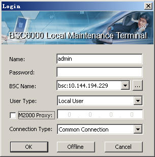

The LMT software supports the OM of more than one BSC. You can select another BSC name and BSC IP address respectively to log in to another BSC.
Prerequisites
- The LMT runs normally.
- The communication between the LMT and the BSC is normal.
- The LMT software version is consistent with the OMU software version.
Context
To achieve this, you need to enter the BSC name and the BSC IP address in BSC Name and BSC IP.
Procedure
- On the BSC6000 Local Maintenance Terminal, use one of the following three methods to log in to the BSC6000 Local Maintenance Terminal again.
- Choose .
- Press F2.
- Click on the tool bar.
- A dialog box is displayed, requesting you to save the existing data.
- Click Yes, a dialog box is displayed, as shown in Figure 1.
Figure 1 Login dialog box
- Enter the user name and the password in the Name and Password text boxes, select the BSC name in BSC Name and User Type, and then click OK. The main interface of the BSC6000 Local Maintenance Terminal is displayed.
Copyright © Huawei Technologies Co., Ltd.